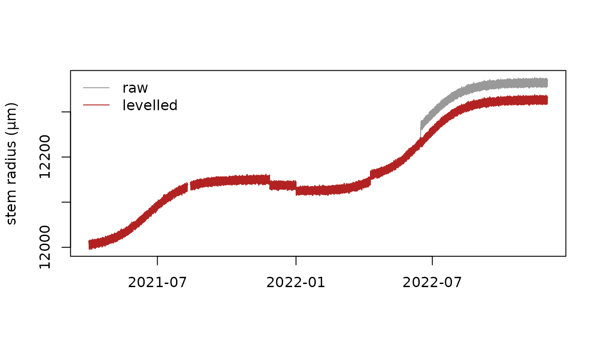

A break is a discontinuity a sensor records that the tree did not produce: a reinstallation, a mounting slip, a replaced logger. Deleting the affected window is easy; the hard part is reconnecting the two sides at the right level, because the tree kept growing while the record is untrustworthy.
The algorithm
For each user-confirmed break window [b_start, b_end],
dm_level_breaks() does four things:
-
Reference lookup. Take the nearest non-NA value
before
b_start(v1) and afterb_end(v2), each bounded to withingrowth_window_daysof the endpoint. Bounding matters: break endpoints usually sit at gap edges, and an unbounded search could grab a reference across an unrelated sensor gap and apply a wrong offset. If no in-window reference exists on either side, the in-gap span is deleted, the shift is skipped, and a warning names the series and break. -
Delete the in-gap span (
value <- NAinside the window). -
Growth extrapolation. Estimate the pre-break growth
rate (µm/day) from the
growth_window_daysbefore the break (growth_method: daily median regression by default), cap it atmax_slope_day, and multiply by the growing-season seconds inside the gap – dormant time contributes no growth. Cap the total atmax_growth_total. -
Shift. Add
adj = v1 - v2 + g_estto everything afterb_end. Ifadjis non-finite (an endpoint on an NA cell), the shift is skipped and the post-break data is preserved un-levelled, with a warning – never silently nulled.
Multiple breaks per series are applied in chronological order, so shifts accumulate.
Demonstration
d <- subset(dendro_sample, series == "SYN_Pa002")
levelled <- dm_level_breaks(
d, brks = list(SYN_Pa002 = list(
c("2022-06-15 10:00:00", "2022-06-15 14:00:00"))))
#> dm_level_breaks [breaks]: 1 break(s) across 1 series...
#> | | | 0% | |==================================================| 100%
#>
plot(d$ts, d$value, type = "l", col = "grey60",
xlab = "", ylab = "stem radius (µm)")
lines(levelled$ts, levelled$value, col = "firebrick")
legend("topleft", c("raw", "levelled"), col = c("grey60", "firebrick"),
lty = 1, bty = "n")
The post-break segment drops by ~35 µm (the injected step) minus the small growth extrapolated for the 4-hour window.
The composable pipeline
dm_clean_series() runs the full sequence; each step is
also callable alone:
d |>
dm_level_breaks(brks) |> # 1. remove sensor artefacts
dm_erase_dormancy() |> # 2. NA outside the growing season
dm_align_seasons() |> # 3. carry growth across winters
dm_rebase_zero() # 4. floor each series at zeroNote: dm_clean_series() runs erasure and alignment in a
single combined pass (one grouped sweep per series) and is the
behavior-stable reference – its output is pinned byte-for-byte against
the original DendroMatic implementation by the package test suite.
Choosing the window
growth_window_days (default 14) controls both the
reference search and the slope window. Short windows track fast growth
phases better but risk finding no reference beside a long gap; long
windows smooth the estimate but can bridge into differently-levelled
data. If a break sits beside a long gap and you see the “no in-window
reference” warning, widen the window or move the break endpoints onto
measured data.